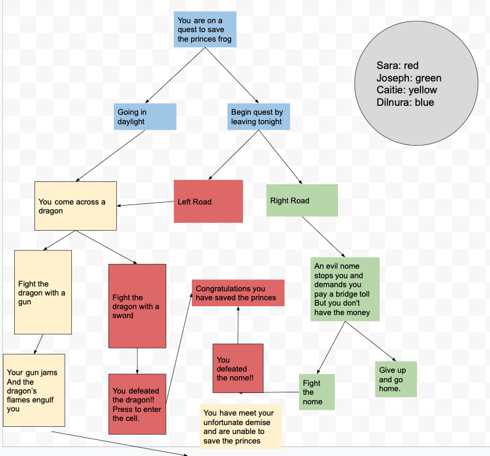

This project was given to us so we can learn the concept of merging and practice our collaboration skills.
My group consisted of four people including myself, and overall we decided that the theme of our project would "A Quest to Save the Princess Frog". Throughout the workflow we did come across some difficulties like merge conflicts and even confusion. However, we as a group were able to overcome the challenges by communicating the whole way, and by using our knowledge to help those who need help. By the end of this project we were all happy not only because we had completed it successfully, but because we learned another important skill.
Something I would've done differently if I had more time is changing my visuals and as well as the concept. We had a choice to do either markdown or html, and my group chose to do markdown because it was somewhat easier. By choosing to do html we couldv'e challenged outselves and our skills but we chose to stay on the safe side.
Final Project
Preview
